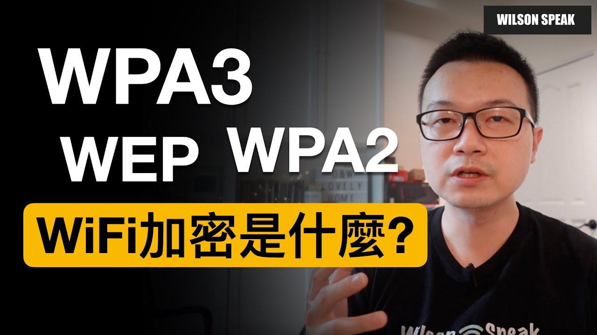

Wi-Fi 密碼設很長就夠了？WPA2、WPA3 和家電相容性一起看

原片發布 2021-04-08 · 點封面看原片。
Wi-Fi 密碼設得長，就能把其他設定都放著不管嗎？加密模式、管理密碼、設備更新各有工作；家裡有舊家電時，也得把能不能連線一起考慮。
這篇延伸自 Wilson 2021 年談 Wi-Fi 加密的影片，從家用設定整理幾個檢查重點。目標是讓常用裝置正常連線，也知道每一項設定到底保護哪一段。
Wi-Fi 密碼和路由器管理密碼不同
Wi-Fi 密碼讓裝置加入無線網路；路由器管理密碼則用來進入設定介面。兩者不要共用，尤其分享無線密碼給家人或訪客時，不應連管理權限也一起交出去。
到設定介面確認管理帳號、密碼和登入方式，依官方指引換掉預設憑證。兩組密碼都要獨特且難猜，不必用「管理密碼多幾個符號」當唯一標準。管理介面能從哪裡登入，也要依實際需要設定。
先認識 WPA2 和 WPA3 的角色
Apple 的家用路由器建議設定優先採 WPA3 Personal，或為相容性使用 WPA2/WPA3 過渡模式。舊裝置需要 WPA2 時，也要確認使用 AES；不要為了讓設備上線就改成 WEP、TKIP 或不加密。
WPA3 的驗證機制提供較新的保護，但不代表可以設容易猜的密碼，也不代表裝置從此不會被攻擊。路由器與終端都要支援，實際採用的安全模式也要確認，不能只看到包裝有 WPA3 就當完成。
| 項目 | 作用 | 要確認什麼 |
|---|---|---|
| Wi-Fi 加密與密碼 | 保護無線接入與通訊 | 支援的安全模式、裝置相容性 |
| 路由器管理密碼 | 保護設備設定權限 | 與無線密碼分開、使用獨特密碼 |
| 訪客／IoT 區隔 | 限制裝置可接觸的網路範圍 | 不同 SSID 不一定代表已隔離 |
模式選擇請對照官方文件；過渡模式仍可能使用 WPA2，不能當成全部裝置都以 WPA3 連線。
舊家電不支援，要看過渡模式與區隔
當你把路由器設定為純 WPA3 模式時，家裡那些幾年前買的舊款智慧插座、舊型掃地機器人，很可能會因為看不懂新的加密指令而完全無法連線。這就是所謂的相容性問題。
為了兼顧新舊設備，現在的路由器多半提供「過渡模式」（WPA2/WPA3 Transitional）。這讓新手機可以用 WPA3 連線，舊家電則用 WPA2 連線。但要注意，這種模式下，安全性並不是全家都達到 WPA3 的最高等級，只是折衷方案。
如果另外開家電用網路，還要確認路由器是否真的做了區隔。兩個不同名稱的 SSID 可能仍在同一個網段；啟用隔離後，手機控制或印表機探索也可能受影響，需要實際驗收。
- 先列出無法輕易重新設定的家電、印表機與控制器。
- 查裝置支援模式，依官方指引測試合適的加密設定。
- 若使用獨立 IoT 或訪客網路，確認實際隔離行為與必要的控制功能。
密碼要難猜，也要好好管理
電話、生日、姓名或其他帳號已使用的密碼，都不適合再拿來當無線密碼。選擇夠長、難猜且獨特的組合，並用可靠方式保存；不能靠某個固定字數或符號組合保證安全。
分享給訪客時，可以考慮依設備支援使用獨立訪客網路，減少主要密碼流傳。若懷疑已外洩，就安排更新和重新連線；改之前先確認家中重要設備，避免人在外面時才發現感應器或控制器離線。
加密 Wi-Fi 不等於所有網站都安全
Wi-Fi 加密保護的是無線通訊這一段，無法替你辨認釣魚網站，也不會讓下載的檔案自動變安全。網站的 HTTPS、帳號登入防護和裝置更新，仍然有各自的作用。
看到 HTTPS 也不等於網站一定可信，詐騙頁面同樣能使用加密連線。輸入帳號或付款資料前，還要確認網址和來源。先把不同層次分開，就不會以為換成 WPA3 後，其他防護都能省略。
改完先測常用裝置，再完成交接
調整前先記下原本模式和重要裝置的需求，並安排方便處理斷線的時間。依官方流程更新韌體和設定，避免在家人開會或遠端工作時突然改密碼。
調整後先測手機、筆電，再測印表機、電視與沒有螢幕的家電。除了 App 顯示在線，也確認列印、投放或控制功能能用。某台連不上時，先查它的頻段與安全模式支援，不要直接把整個網路的加密關掉。
- 確認常用裝置能重新加入網路。
- 測試實際控制、列印與需要跨裝置的功能。
- 保存設定與密碼，讓負責維護的人找得到。
你可能還想問
WPA2/WPA3 過渡模式代表全部都在用 WPA3 嗎？
不是。相容的裝置可能使用 WPA3，其他裝置仍可能採 WPA2。需要查實際連線資訊，不能只看路由器允許的模式。
把 SSID 隱藏起來，能取代加密嗎？
不能。隱藏網路名稱不等於保護無線通訊，也不能取代合適的安全模式、獨特密碼和更新。先把這些基本設定做好。
如果我有很多訪客，該怎麼辦？
可以依路由器支援設定訪客網路，但要檢查是否禁止存取內部網路、是否有其他隔離選項，再實際驗證。不同名稱本身不保證訪客碰不到 NAS 或印表機。
影片與參考資料
原片發布 2021-04-08。文章整理 2026-11-14，依影片公開字幕、說明延伸，並以官方資料校訂。實際設定請對照你的型號與版本。